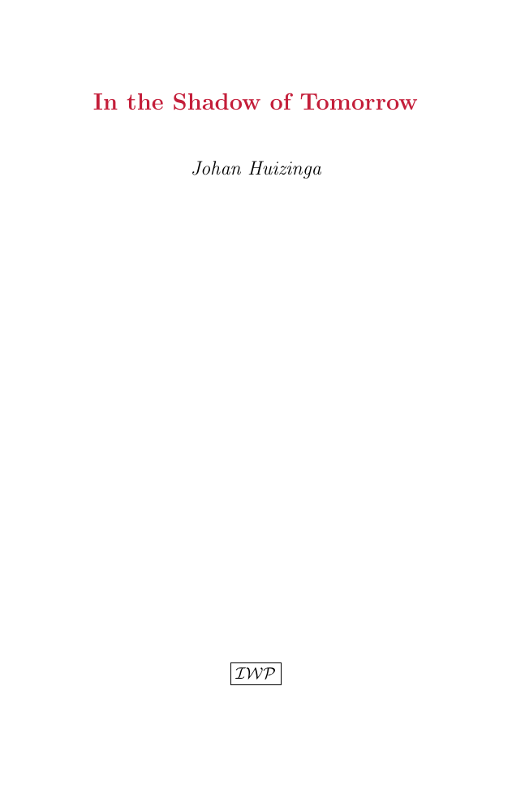
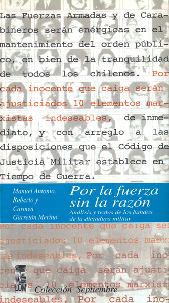

1:04:09 · 12 OPERE
La dimensione del discorso politico.
Il filo del discorso
Il relatore interroga il confine fra l’ordine necessario alla convivenza e una politica che finisce per amministrare ogni gesto. La riflessione parte da natura e artificio: il racconto di Adamo che nomina gli animali, il rapporto con il cibo e l’organizzazione del tempo mostrano, nella sua lettura, un crescente allontanamento dall’esperienza diretta. Campanelle scolastiche, sirene di fabbrica e comandi militari diventano immagini di un’obbedienza appresa, senza che l’analogia provi da sola un’identità fra istituzioni diverse.
Leggi la sintesi completaRiduci la sintesi
Il discorso passa quindi alla comunicazione pubblica attraverso Don’t Look Up, che il relatore dichiara di avere visto soltanto in parte, e il confronto con Idiocracy. Huizinga offre il nucleo della discussione sullo spirito critico: la disponibilità di informazioni non viene equiparata alla capacità di giudicarle. Le polemiche sulle misure pandemiche e sui dati delle ambulanze restano attribuite, con una nota che distingue l’utilizzo dei soccorsi dal carico di malattia. Seguono tre consigli di lettura: l’analisi dei bandi della dittatura cilena dei Garretón, il saggio politico di Jaspers del 1966 e il libro di Gruen sull’obbedienza. La conclusione torna alle tradizioni greca e biblica: la riluttanza dei governanti platonici e l’apologo di Iotam, nel libro dei Giudici, sono accostati per chiedere perché il potere venga desiderato proprio da chi lo considera l’unico scopo della vita. È un percorso di critica politica e morale, le cui analogie con il presente non vengono trasformate in equivalenze storiche dimostrate.
I libri nel discorso

Genesi
Note sul riferimento
Copertina: Einaudi, I libri della Bibbia / Einaudi Tascabili, 2000; introduzione di Steven Rose
Copertina dell’edizione autonoma Genesi, nella serie I libri della Bibbia, con introduzione di Steven Rose. Edizione scelta come riferimento iconografico; nessuna edizione è confermata nel video.
Il testo del Genesi e Adamo sono espliciti a 209.58; il dare nomi agli animali corrisponde a Genesi 2,19–20. Traduzione e interpretazione metafisica non dedotte dal titolo.
Don’t Look Up
Note sul riferimento
Copertina: Netflix · immagine promozionale ufficiale del film 2021
Immagine promozionale autentica e intera scaricata dalla scheda Netflix del film, con il cast e la composizione grafica della campagna. È il key art orizzontale della piattaforma, non una copertina di libro o una locandina verticale ricostruita. Il titolo compare anche sul cappellino del personaggio. Nessuna grafica o scritta aggiunta.
Titolo Don’t Look Up e anno 2021 pronunciati; trama della cometa e scena televisiva riconoscibili. Il relatore dichiara circa quaranta minuti visti e nessuna visione integrale del film.
Idiocracy
Note sul riferimento
Immagine promozionale del film · distribuzione digitale: Film statunitense del 2006, regia di Mike Judge, con Luke Wilson e Maya Rudolph, distribuito da 20th Century Fox. Immagine promozionale autentica della distribuzione digitale; non una copertina libraria. La scheda statunitense distingue il 2006 di uscita dal copyright grafico del 2005.
Grafica ufficiale con il titolo Idiocracy e il cast, vista integralmente nella scheda Apple TV. Non è una prova delle tesi sociologiche del relatore.
Idiocracy di Mike Judge è nominato esplicitamente come confronto satirico.

La crisi della civiltà / In the Shadow of Tomorrow (In de schaduwen van morgen)
Identificazione probabile
Note sul riferimento
Copertina: IWP Books · ristampa inglese 2023
Copertina anteriore autentica della ristampa IWP 2023, estratta geometricamente dal PDF editoriale della copertina estesa, seguendo i segni di taglio. Titolo, autore e marchio IWP sono interi: nessuna ricostruzione o ritocco del testo. Il colophon del volume dichiara Isaac Waisberg, typesetter, 2023. Non è una copertina del 1936 e non si attribuisce alla copia del video; nessun ISBN inventato.
Huizinga, edizione inglese 1936, titolo del capitolo VIII e relativo incipit sono espliciti a 1745–1878. Passo successivo sul saggio e lo sciocco a 2424 corrispondente allo stesso testo. Titolo del volume non pronunciato, identificazione probabile riscontrata nel testo editoriale.

Il tramonto dell’Occidente
Note sul riferimento
Copertina: Nino Aragno, 2019 · volume II, seconda parte · edizione di riferimento
Spengler e Il tramonto dell’Occidente sono pronunciati nel confronto con Huizinga; non è un nuovo saggio di quest’ultimo.
Antifragile
Note sul riferimento
Copertina: Les Belles Lettres · 2013 · traduzione francese Rimoldy e d’Azay
Copertina autentica dell’edizione francese Antifragile. Les bienfaits du désordre. Non è presentata come copertina italiana né come esemplare identificato nel video. L’antifragilità riguarda il beneficio da alcuni fattori di disordine, non l’obbligo di esporsi a qualunque rischio.
Titolo Anti-Fragility e nome deformato dalla trascrizione automatica identificano Antifragile di Nassim Nicholas Taleb. La critica alla sua condotta pandemica è un giudizio del relatore, non una descrizione verificata del testo.

Transgressing the Boundaries: Towards a Transformative Hermeneutics of Quantum Gravity
Identificazione probabile
Note sul riferimento
Frontespizio del preprint dell’articolo parodico: Social Text · 46/47, pp. 217–252 · 1996 · immagine del preprint 1994, revisione 1995
Frontespizio autentico del preprint dell’autore: 28 novembre 1994, revisione 13 maggio 1995. Non è la copertina di un libro né la prima pagina della veste tipografica di Social Text. Il testo è una parodia dichiarata, non un articolo da usare per apprendere fisica.
Alan Sokal e la celebre beffa del testo pubblicato con intento parodico sono espliciti; collegamento probabile all’articolo Social Text 1996. Titolo non pronunciato, non confuso con il successivo libro con Bricmont.

Por la fuerza, sin la razón. Análisis y textos de los bandos de la dictadura militar
Note sul riferimento
Copertina: LOM Ediciones · 1998, ISBN 9562821250
Copertina autentica scaricata direttamente dall’editore LOM. Sono leggibili il titolo, il sottotitolo e i tre autori Manuel Antonio, Roberto e Carmen Garretón Merino. Il testo minaccioso nella grafica riproduce linguaggio dei bandi criticati dal volume e non è un’approvazione della scheda. Il catalogo commerciale usa anche il sottotitolo Los bandos del golpe; l’immagine reca Análisis y textos de los bandos de la dictadura militar.
Titolo reso in italiano a 2540.2 e pronunciato in spagnolo a 2611.76; contenuto sui bandi della dittatura di Pinochet esplicito. Tre autori e dati editoriali riscontrati presso editore, catalogo e ONU.

Wohin treibt die Bundesrepublik?
Identificazione probabile
Note sul riferimento
Copertina: Schwabe, Karl Jaspers Gesamtausgabe I/25, 2026, a cura di Bernd Weidmann; edizione critica del testo del 1966 con interviste e risposta del 1967.
Immagine autentica dell’opera, controllata visivamente; l’edizione di riferimento non è attribuita al filmato.
Karl Jaspers, anno 1966, analisi della Repubblica federale e lettura sul regime di tutti i partiti e grande coalizione corrispondono al saggio. Il titolo non è pronunciato: mantenuta identificazione probabile. Il successivo volume di risposta non viene identificato automaticamente.

Wider den Gehorsam (Contro l’obbedienza)
Note sul riferimento
Copertina: Copertina autentica Klett-Cotta, ISBN 9783608948912, opera del 2014: fondo arancio, autore e titolo bianchi, grifone nero dell’editore. Colophon verificato nell’estratto editoriale; non è una edizione italiana.
Immagine autentica dell’opera, controllata visivamente; l’edizione di riferimento non è attribuita al filmato.
Arno Gruen e Wider den Gehorsam sono pronunciati, benché deformati dalla trascrizione automatica; il titolo è tradotto dal relatore come resistenza all’obbedienza.

Giudici
Note sul riferimento
Copertina della Bibbia San Paolo, raccolta contenente Giudici: San Paolo · La Bibbia, Nuova Versione dai Testi Antichi
Riferimento alla copertina autentica della Bibbia San Paolo già presente nell’archivio, ISBN 9788821593246. È la raccolta che include il libro dei Giudici, non una copertina autonoma del singolo libro e non l’edizione italiana identificata nel video. L’ISBN appartiene alla raccolta biblica.
Libro dei Giudici e capitolo 9 espliciti a 3383.05; letti Abimelech, Iotam e l’apologo degli alberi fino a 3718. Riferimento alla copertina della raccolta Bibbia San Paolo, senza attribuirla alla traduzione letta.

La Repubblica
Identificazione probabile
Note sul riferimento
Copertina: Laterza · La Repubblica · edizione con testo a fronte di riferimento
Immagine associata all’ISBN di riferimento e controllata visivamente; edizione e traduzione non identificate come quelle citate o lette nel video.
Platone e l’idea di affidare il governo a chi non lo desidera sono espliciti; il passo rimanda probabilmente a Repubblica I347 e VII520–521. Titolo non pronunciato. Non viene dedotto un nuovo dialogo dalle osservazioni generiche iniziali.